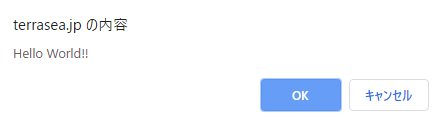

アダルトサイトで良く出るアレを作りたい！
更新：2020/02/05

はじめに
当サイトのBadUSBの記事でも用いている、最近はあまり見ることも無くなってきましたが、昔は見ることも多かった
アダルトサイトで間違った所をクリックすると出るあのダイアログを作ってみました。
もくじ
そもそもアレって何
よくアダルトサイト等で見られる、あなたのPCはウィルスに感染しています!みたいなやつありますよね?
そもそもアレはJavaScriptで動いてるみたいです。
JavaScriptとは?って方は今後JavaScriptについての記事を作成予定ですので、 お待ちください!
そもそもアレはJavaScriptで動いてるみたいです。
JavaScriptとは?って方は今後JavaScriptについての記事を作成予定ですので、 お待ちください!
ソース
JavaScriptのソースはこのようになっています。
falseの場合"キャンセル"をクリックしたときの動作になります。
実際の挙動確認はこちら
また
実際の挙動確認はこちら
また文字列の中に\nの改行コードを入れることで改行をすることもできますし、
window.confrimやwindow.alertの"window"は省略することができます。
window.confirm("表示させたい文字列");
ソース内の"window.confirm"がウィンドウ上にダイアログを表示させるモノとなっておりvar result = window.confirm("表示させたい文字列");
if(result==ture){
OK時の動作
}else{
キャンセル時の動作
}
このようにif文に入れるとtureの場合"OK"をクリックしたときの動作falseの場合"キャンセル"をクリックしたときの動作になります。
実際の挙動確認はこちら
また
window.alert("表示させたい文字列")
にすると、キャンセルの表示が無く"OK"のみのモノになります。実際の挙動確認はこちら
また文字列の中に\nの改行コードを入れることで改行をすることもできますし、
window.confrimやwindow.alertの"window"は省略することができます。
おわりに
このように割と簡単に、ダイアログは作ることができるので、
皆さん使ってみてくださいね(?)
皆さん使ってみてくださいね(?)
関連記事
Tweet